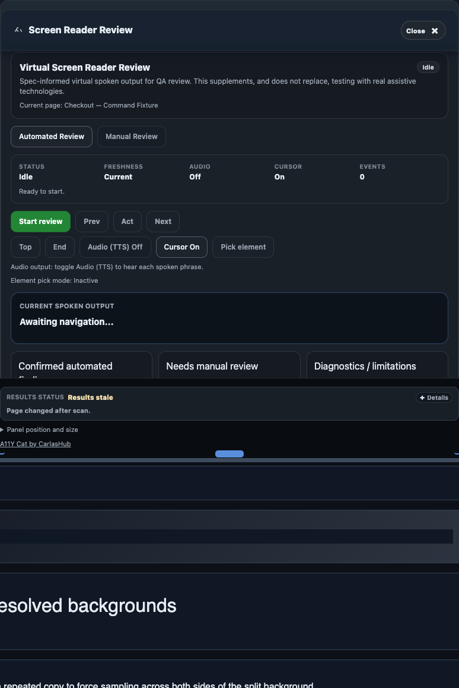

Virtual SR review
Screen Reader Review
Screen Reader Review is a virtual review aid. It is not real VoiceOver/NVDA/JAWS evidence.

Virtual review boundary
Screen Reader Review simulates structured review flow. It does not emulate real assistive-technology engines and cannot be used as sign-off evidence by itself.
Automated Review and Manual Review
- Automated Review: deterministic scan outputs and classification data.
- Manual Review: user-validated observations and contextual notes.
Screen Reader Review exports
When export controls are visible, Screen Reader Review state may be included in local issue-state or evidence bundles. Always review sensitive text before sharing.
AT limitation statement
Required evidence: VoiceOver, NVDA, and JAWS behavior must be tested manually where required. Virtual Screen Reader Review does not replace real AT testing.